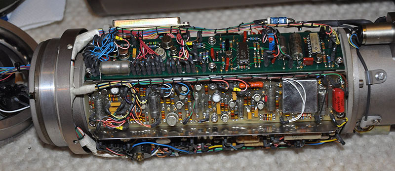
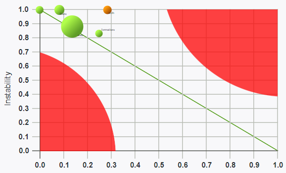

Чтобы применять любые принципы правильно нужно их понять.
Абстракция — обобщение суещественного, удаление несущественного для контекста.
Зачем?
Впихнуть невпихуемое.

TTL объекта = ~20 сек.
Оперативно (в кратковременной памяти) человек может оперировать малым числом объектов:
- 7±2 объектами (George Miller, 1989).
- 4±1 (Cowan, 2001).
- Число зависит от объектов.
Группировка (Chunking)
88003334434
8-800-333-44-34
Архитектуру изобретают для того, чтобы совладать с неподъёмно сложными системами.
Для мозга неподъёмность начинается чудовщно скоро.
Слои!
Пять сущностей в слое — супер!
> 5 слоёв — проблема.

Абстракция — не цель, а инструмент.
Абстракция — необходимое зло.
Cohesion / coupling
Проверочные правила?
SOLID
© 2000 Robert Martin
- SRP
- OCP
- LSP
- ISP
- DIP
Что такое «пакет»?

Группа единиц кода (классов)
- Модули
- Библиотеки
- Микросервисы
?
- Как правильно формировать пакеты?
- Как работать с зависимостями пакетов?
Cohesion / coupling для пакетов?
Да!
Те же SOLID-маркеры?
Не совсем...
Package Cohesion (дизайн)
REP, CCP, CRP
Package Coupling (использование)
ADP, SDP, SAP
Reuse-Release Equivalency Principle
The granule of reuse is the granule of release.
Собирайте вместе то, что используется юзером одновременно.
import java.io.ByteArrayOutputStream;
import java.io.IOException;
class Main {
public static void main(String[] args) throws IOException{
ByteArrayOutputStream os = new ByteArrayOutputStream();
os.write("my word".getBytes());
os.writeTo(System.out);
}
}
import java.stream.ByteArrayOutputStream;
import java.exceptions.IOException;
class Main {
public static void main(String[] args) throws IOException{
ByteArrayOutputStream os = new ByteArrayOutputStream();
os.write("my word".getBytes());
os.writeTo(System.out);
}
}
Common Closure Principle
Classes that change together are packaged together
Классы меняются мейнтенером вместе — упаковываем в один пакет.
i18n
- Перевод строк.
- CLI-инструмент для вынимания строк из кода.
Common Reuse Principle
Classes that are used together are packaged together
Классы не используются юзером по отдельности — упаковываем в один пакет.
Кеш
- Редис.
- Мемкеш.
Отлично звучит?

Реальность сурова :(

 Dr. Stefan Kluth, Max-Planck-Institut fuer Physik
Dr. Stefan Kluth, Max-Planck-Institut fuer Physik
Фокусируйтесь на CCP и REP на начальных стадиях.
Acyclic Dependencies Principle
The dependency graph of packages must have no cycles
Если есть циклы, проблема вызывает лавину.
Как проверить циклы?
- Строим направленный ацикличный граф.
- Смотрим на него :)
Для PHP есть clue/graph-composer.
Но нужно исключать не интересные пакеты (PR #45).

Чем меньше зависимостей, тем проще...
Как разорвать цикл?
- DIP — использовать инверсию зависимостей через интерфейсы.
- CRP — выделить общий пакет.
- Переделать...
Stable Dependencies Principle
Depend in the direction of stability
Не получится строить стабильное на нестабильном.
Можно ли посчитать (не)стабильность?
I = Ce / (Ce + Ca)
- I — Instability, нестабильность. 1 — нестабильный, 0 — стабильный.
- Ce — Efferent (outgoing, fanout) Coupling. Количество классов вне пакета, от которых зависит пакет.
- Ca — Afferent (incoming, fanin) Coupling. Количество классов вне пакета, зависящих от пакета.
Как повысить стабильность?
Stable Abstractions Principle
A package abstractness should increase with stability
Стабильные пакеты абстрактны. Гибкие конкретны.
Можно измерить абстрактность?
A = Na / Nc + Na
- A — абстрактность. 0 — конкретный, 1 — абстрактный.
- Na — число абстрактных сущностей в пакете.
- Nc — число конкретных сущностей в пакете.
- Абстрактные пакеты должны быть стабильными: безболезненно на них завязываться.
- Конкретные пакеты должны быть нестабильны: легко их менять.
D-метрика

Ось X — абстрактность, ось Y — нестабильность.
Плохо и хорошо
Иногда 0, 0 — OK. Strings, arrays, stdlib.
D = | A + I − 1 |
Расстояние от главной линии. 0 - хорошо. 1 - плохо.
Инструменты
Можно сунуть в пайплайн.
Как и SOLID, дополнительные принципы и метрики — не догма, но могут быть полезны.
Правильное проектирование пакетов вызывает взрывное дробление. Это страшно.
Принципы позволяют не скатиться в left-pad или монолит.
Время вопросов!
- sam@rmcreative.ru
- @sam_dark
- https://slides.rmcreative.ru/2021/packages/
- Wikipedia: Short-term memory
- c2 wiki
- Principles of OOD
- Agile Software Development, Principles, Patterns, and Practices — Robert C. Martin
- Principles of Package Design — Matthias Noback